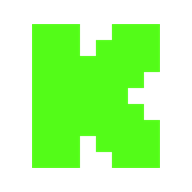
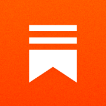

Hazlo tuyo
Elige un tema, cambia el CSS o crea un overlay personalizado. Adapta el chat y las alertas a tu transmisión.
Reúne mensajes de YouTube, Twitch, TikTok, Facebook, Kick y más en un solo panel. Personalízalo con overlays, alertas, texto a voz y automatización.
Conecta Facebook, YouTube, Twitch, Zoom, Instagram, TikTok y otras plataformas desde un solo panel.
Muestra mensajes seleccionados en tu directo con temas y animaciones personalizables.
Crea activadores y acciones en el editor visual de Event Flow, o configura comandos de chat y temporizadores.
Celebra nuevos seguidores, membresías, donaciones y otros eventos compatibles con animaciones y sonidos.
Convierte los mensajes del chat en voz con servicios de texto a voz gratuitos y de pago.
Envía mensajes automáticamente de una plataforma a otras con el chat entre plataformas.
Minijuego Battle Royal y herramientas de participación para entretener a tu chat.
Crea encuestas y votaciones interactivas y organiza sorteos, todo con temas personalizables.
Empieza con overlays y ajustes listos para usar. Ve más allá con tus propios diseños, integraciones y alojamiento.
Conecta con tu audiencia en todas tus plataformas favoritas




")



¡Más de 100 plataformas compatibles!
Ver la lista completa →Recibe ayuda inmediata de nuestra comunidad y del desarrollador
Obtén la aplicación o la extensión, conecta tus fuentes y añade tu superposición.